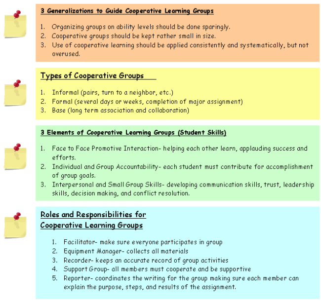

Cooperative Grouping
OBJECTIVE:
In this module, you will learn about cooperative learning.
BEGIN by reading and reviewing the background material in the order listed:
- Reading Assignment for Activity 2
- Read research segments called Focus on Effectiveness,
from Marzano, a current leader in research based instructional strategies
You
may want to expand your professional library and purchase his book, it's a great
teacher resource:
Marzano, R.J., Pickering, D.J., and Pollock, J.E. Classroom
instruction that works: Research based strategies for increasing student achievement.
ASCD. Virginia; 2001.
| Many times you may be referred to websites and references outside of our module that are great resources to add to your teacher tool box of references. We do our best to be sure that all links are up to date, however, technology changes fast and if you find links that are no longer current, please send us an email. |  |
Focus on Effectiveness: Cooperative Grouping
Cooperative learning is actually a generic term that refers to numerous methods for grouping students. At least 10 different methods have been formally described in the research literature. Therefore, "cooperative learning" as a strategy, requires a closer look to take advantage of potential benefits for learners.
Effective cooperative learning occurs when students work together to accomplish shared goals and when positive structures are in place to support that process (Johnson & Johnson, 1999).
Even though appropriate use of student groups for learning has been shown to yield significant learning improvement across disciplines, the successful application of cooperative grouping in classrooms still eludes many educators (Johnson & Johnson).
Criteria for EFFECTIVE cooperative learning groups include:
- Students understand
that their membership in a learning group means that they either succeed or fail-together.
(Deutsch, 1962).
- "Positive interdependence" includes:
- mutual goals,
- joint rewards,
- resource interdependence (each group member has different resources that must be combined to complete the assignment), and
- role interdependence (each group member is assigned
a specific role).
- Students help each other learn
and encourage individual team members' success.
- Individuals
in the group understand that they are accountable to each other and to the group
as a distinct unit.
- Interpersonal and small-group
skills are in place, including:
- communication,
- decision making,
- conflict resolution, and
- time management.
- Members are aware of the group's processes. Individual members talk about "the group" as a unique entity.
| Key Research Findings | |
|---|---|
| Organizing students in heterogeneous cooperative learning groups at least once a week has a significant effect on learning (Marzano, Pickering, & Pollock, 2001). | |
| Low-ability students perform worse when grouped in homogeneous ability groups (Kulik & Kulik, 1991, 1997; Lou et al, 1996). | |
| Cooperative learning can be ineffective when support structures are not in place (Reder & Simon, 1997). | |
| There may be no other instructional strategy that simultaneously achieves such diverse outcomes as cooperative grouping. The amount, generalizability, breadth, and applicability of the research on cooperative, competitive, and individualistic efforts provides considerable validation of the use of cooperative learning to achieve diverse outcomes, including achievement, time on task, motivation, transfer of learning, and other benefits (Cohen, 1994a; Johnson, 1970; Johnson & Johnson, 1974, 1978, 1989, 1999a, 2000; Kohn, 1992; Sharan, 1980; Slavin, 1977, 1991). | |
IMPLEMENTATION
Grouping students to work collaboratively and cooperatively offers benefits for learners. Teachers who are successful at facilitating cooperative learning employ research-based strategies, such as:
Create the right type of group for the need. Sometimes an occasional informal ad hoc group is needed, such as pair and share. Base groups are formed for long-term social and interpersonal support. Formal learning groups are used when a commitment of time and effort is required.
Keep group size small. Ideally, learning groups include no more than four students. Consider tasks and equipment that is required to be used by each students. And don't forget TIME on TASK. Groups of two or three are ideal. Base groups may be larger, up to six students.
Use ability grouping sparingly. Students across the spectrum of abilities benefit by heterogeneous grouping, especially low-ability students.
Don't use cooperative learning for all instructional goals. While cooperative learning is a powerful strategy, it can be overused, or misapplied. Students need time to investigate ideas and pursue interests on their own.
Use a variety of strategies when choosing students for groups. Many selection strategies (common clothing, favorite colors, letters in names, birthdays) will work when attempting to randomly group students.
Facilitate success. It is extremely IMPORTANT to DEVELOP organizational tools, forms, learning journals, and other structuring documents that foster the smooth processes needed for effective cooperation and group work. Use online tools for ubiquitous access to forms.
Support new groups. Meet with new group members to support their success. Cooperative learning is a practiced skill
| TEACH specific skills before grouping students, DEFINE criteria for success, and DEVELOP rubrics for key expectations. MONITOR and ADJUST |
Additional Resources to READ!
Take a few minutes and browse through the Focus on Effectiveness website (http://www.netc.org/focus/). Here you will find much more information about each one of the strategies that you will be introduced to in this module. Bookmark this page, as you may need these resources when you enter the classroom!
*2005 Focus on Effectiveness is a product of the Northwest Regional Educational Laboratory. These materials are public domain and may be reproduced without permission. The following acknowledgement is requested on materials which are reproduced; Developed by the Northwest Regional Educational Laboratory.
 Now
that you have read the current research on cooperative learning, take a few minutes
and fill out the K and W on your KWL organizer in your handouts. Once yours is
complete, watch the class discussion...
Now
that you have read the current research on cooperative learning, take a few minutes
and fill out the K and W on your KWL organizer in your handouts. Once yours is
complete, watch the class discussion...
Now that you know what research says about cooperative learning groups, here are some key elements that you will need to keep in mind as you plan your lessons to incorporate cooperative learning groups
CHECKLIST FOR PLANNING COOPERATIVE GROUPING STRATEGIES
 What is the "Big Idea" your students will be learning?
What is the "Big Idea" your students will be learning?
 What criteria will I use for grouping?
What criteria will I use for grouping?
o Homogeneous/Heterogeneous
Groups
o Color of hair
o Birthdays
o Boys/Girls
o Color of shirts
o
Number off
 Design
of Cooperative Groups
Design
of Cooperative Groups
o ______Informal Groups (share-pairs,
turn to a neighbor, etc)
o ______Formal Groups (academic
assignments, several days/weeks)
o ______Base Groups (Long
Term)
 What will be the size of each group?
What will be the size of each group?
 What are my expectations for successful participation during Cooperative Learning?
What are my expectations for successful participation during Cooperative Learning?
 Besides acquisition of "knowledge", what is the purpose of the group?
Besides acquisition of "knowledge", what is the purpose of the group?
o
___Helping each other learn, working as a team, applauding success
o
___Each individual must contribute to achieving goals
o
___Developing communication skills, trust, leadership,
decision making,
and conflict resolution.
 How do I help students who do not work well in groups?
How do I help students who do not work well in groups?
NOTES and Activities for Cooperative Grouping:
Teachers throughout the United States incorporate cooperative learning groups as an effective instructional strategy. Cooperative learning is more than placing students in groups. Specific skills and expectations must be established for successful use of this instructional strategy.

Watch this class discussion on Cooperative Grouping
Take a few minutes and refer back to your KWL chart and complete the L portion.
Watch how the instructor assigns students into cooperative groups.
Expectations for Intern Performance
TEA has established standards for the Pedagogy and Professional Responsibilities exam (PPR). The state has defined four standards which are directly related to the four domains contained on the TExES PPR exam.
act provides a "guaranteed curriculum" aligned with the four standards established by the state.
Expectations of Intern Performance are clearly defined by act within these guidelines to establish observable characteristics of a highly effective teacher.
Our expectation is that our candidates will clearly demonstrate an understanding of the skills needed to successfully complete the certification process.
Take a few minutes and read through the four standards of Expectations for Intern Performance handout then watch the video for the class discussion.
In order for teachers to demonstrate continued professionalism, certified teachers in the state of Texas must:
- renew their certificates every five (5) years.
- maintain an accurate record and documentation of the required "Continuing Professional Education" hours to fulfill the requirements to renew their certificate.
- Your school district will provide many opportunities for you to maintain the necessary hours to renew your teaching certificate.
BIG
IDEA

Professional educators must be able to:
- multi-task
- manage their time in an effective and proficient manner.
Research has proven that individual interns who lack:
- skills in organization,
- time management, and
- "with-it-ness" will struggle with the first year of teaching.
Failure to develop these personal skills will jeopardize your chances of obtaining your standard teaching certificate.
 Complete
your Activity 2 Summary Page and add it to your Frameworks Notebook.
Complete
your Activity 2 Summary Page and add it to your Frameworks Notebook.